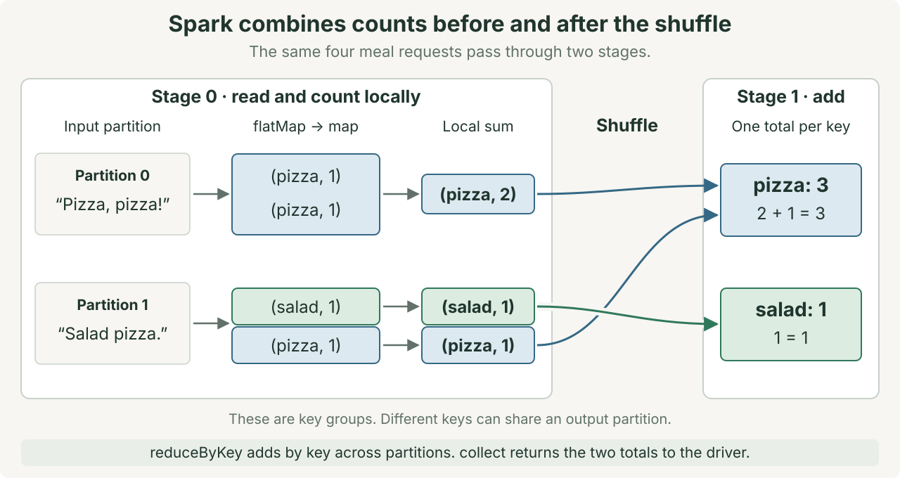
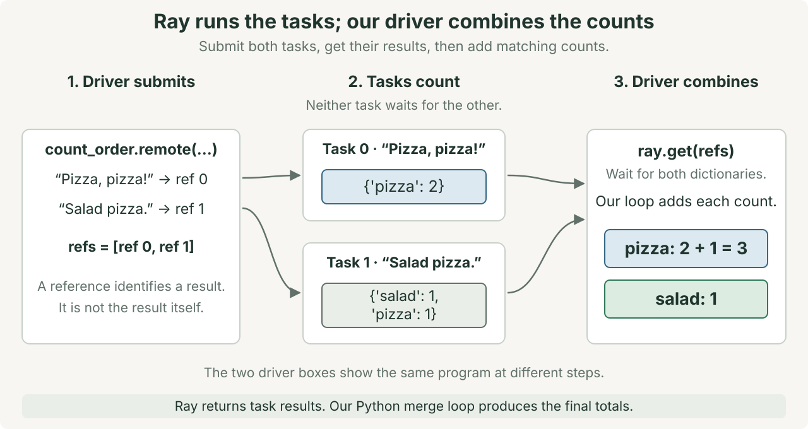

Spark and Ray in depth
MapReduce explains how contributions become a complete total. Spark and Ray provide different ways to schedule work around that computation.
Starting knowledge: Python functions, lists, dictionaries, SQL grouping, and map → shuffle → reduce. Lecture 13 focuses on MapReduce. This lecture develops its short Spark and Ray preview. The opening check reviews the grouping rule.
Goal: Trace a Spark job and a Ray program. Explain where data moves, which work can overlap, and what a retry can repeat.
Use 60 minutes for the visual lecture and 15 minutes for the closing investigation. This session has no quiz.
Lab 11 meets Tuesday November 17. Quiz 10 covers MapReduce, Spark, and Ray on Thursday November 19.
Why use a distributed framework?
Our two lunch orders need only a loop. The reason to study Spark and Ray appears when a real workload exceeds available time or resources.
Recall the illustrative meal-demand report: scan 10 TB within 10 minutes. At 2 GB/s, one machine needs 5,000 seconds, or about 85 minutes, just to read the input.
More machines can share that work. With balanced input and independent disks, 100 machines reading at 2 GB/s each have an ideal scan time of 50 seconds. That is about 1 minute, before coordination, data transfer, and processing costs.
We could manage the workers ourselves. Every program would then need code to assign inputs, transfer results, track completion, and handle failures.
Spark manages execution for a data pipeline. Ray schedules Python calls and their dependencies. Both provide reusable execution machinery. In our Ray example, we still write the code that combines results.
The goal is to meet the workload’s needs with correct results and less custom coordination code. We keep the small lunch example to make that machinery visible. The example itself does not need distributed execution.
Start with the lunch orders
A fictional classroom investigation
Maya opens the student club’s lunch orders: “Pizza, pizza!” and “Salad pizza.”. Noor points to their Python word count.
We know the total. Which parts could different workers do?
Each word requests one meal. These two toy orders produce three pizzas and one salad.
The first worker finds two pizzas. The second finds one pizza and one salad. Is either pizza count the club’s final total?
Check your explanation
No. The complete pizza total needs both contributions: 2 + 1 = 3. The grouping rule connects work across the two inputs.
Think of two ways to organize helpers. Give them a shared sequence of steps, or assign individual jobs and collect their results.
| Familiar organization | System mechanism | What you must specify |
|---|---|---|
| A recipe applied to many trays of orders | Spark runs a pipeline over data partitions. | The operations and their dependencies |
| Helpers receive separate jobs and return answers | Ray Core runs Python tasks and actor methods. | The calls, their inputs, and how results combine |
The comparison explains organization. Computers also need resources, data transfer, and recovery rules. A helper’s paper tray does not explain those costs.
Spark: describe a data pipeline
A partition is a portion of a dataset. Our example starts with two partitions, each containing one order.
A resilient distributed dataset (RDD) is Spark’s partitioned collection of records. An RDD transformation describes a new collection without changing the input.
The driver runs the main program and coordinates the application. In a cluster, executors are processes that run tasks and store application data. A cluster manager allocates resources to applications. [1]
A task is one unit of work on a partition. An executor can run several tasks when resources permit. Two partitions do not imply two machines.
We use local[2] to run Spark locally with two worker threads. This demonstrates scheduling on one computer, without creating a two-machine cluster.
Spark records a data pipeline, then executes the needed work when an action requests a result.
| Operation | Effect on the lunch orders | When work starts |
|---|---|---|
flatMap | Turn each order into separate meal names. | Records a transformation |
map | Turn each meal into (meal, 1). | Records a transformation |
reduceByKey | Add the contributions for each meal. | Records a transformation |
collect | Return the result records to the driver. | Requests execution as an action |
Lazy evaluation means these transformations wait until an action needs their results. Spark retains a directed acyclic graph (DAG) of dependencies. Its arrows show which results require earlier results. [2]
Run the Spark example
Read the code before running it. Predict the final dictionary and identify the action.
Download spark_lunch.py. Install pyspark and a Java version supported by that installation. Then run python3 spark_lunch.py. See the PySpark installation requirements.
"""Count a tiny lunch fixture with Spark on this computer."""
import argparse
import re
from operator import add
from pyspark import SparkContext
def split_order(order):
"""Return one word per meal request, including repeats."""
return re.findall(r"[a-z]+", order.lower())
def main():
parser = argparse.ArgumentParser(description=__doc__)
parser.add_argument(
"--plan", action="store_true", help="Print the RDD dependencies."
)
args = parser.parse_args()
sc = SparkContext(master="local[2]", appName="Lunch counts")
try:
orders = ["Pizza, pizza!", "Salad pizza."]
source = sc.parallelize(orders, numSlices=2)
# These transformations describe work. They do not start the count.
meals = source.flatMap(split_order)
pairs = meals.map(lambda meal: (meal, 1))
counts = pairs.reduceByKey(add, numPartitions=2)
if args.plan:
print(counts.toDebugString().decode("utf-8"))
# collect starts the job and brings this small result to the driver.
totals = dict(sorted(counts.collect()))
print("Totals:", totals)
finally:
sc.stop()
if __name__ == "__main__":
main()Expected output: Totals: {'pizza': 3, 'salad': 1}. Startup logs can vary. This toy input explains execution, not a performance advantage.
collect() brings every result record into driver memory. That is safe for our two totals. For large outputs, write distributed results or inspect a bounded sample. [2]
Follow the shuffle boundary
Can one input partition compute its local pizza contribution? Yes. Can that partition compute the final pizza total alone? No.

A narrow dependency lets each input partition contribute to at most one output partition. These flatMap and map operations keep each order’s work within its partition.
A wide dependency can send contributions from one input partition to several output partitions. Our grouped totals require a shuffle: redistribution by meal name.
A stage groups tasks that can run without a shuffle between their operations. A shuffle separates stages. An action starts a job to compute its result. [1] [3]
| Dependency | Examples | Execution and costs |
|---|---|---|
| Narrow | flatMap, map, filter | Adjacent operations can process each partition together. Computation still takes time, but these operations need no intermediate shuffle. |
| Wide | reduceByKey, join, groupBy, when redistribution is needed | A shuffle converts records to bytes and transfers them. It can also read or write disk files. |
- Process both input partitions. Emit one pair per meal request.
- Combine repeated keys locally. Partition 0 produces
(pizza, 2). - Shuffle contributions by meal. The pizza destination receives values
2and1. - Add each meal’s values. Return pizza
3and salad1.
reduceByKey combines values locally before shuffling. Addition permits that grouping because it is associative and commutative. Changing the grouping and order does not change these integer totals. [4]
The first lecture showed every occurrence crossing the conceptual shuffle. Spark can send fewer pairs by carrying partial sums. Both versions retain every occurrence’s contribution.
Change numPartitions=2 to numPartitions=4. Must the job run twice as fast?
Check your explanation
No. The result still contains two keys, and some output partitions can be empty. Scheduling and data transfer add costs. Available worker resources also limit overlap.
Inspect the plan: run python3 spark_lunch.py --plan. Find ShuffledRDD. Its surrounding dependencies connect the work before and after redistribution.
For a larger run, compare stage duration, shuffle volume, and individual task times in the Spark UI. A slow task can reveal uneven work.
Optional Lab 11 example: word count over 4,000 abstracts
The optional Spark exercise uses the same operations on arXiv abstracts. The excerpt assumes re is imported and lines is an RDD with four partitions.
Predict where the shuffle occurs. Then compare the code with the printed dependency plan.
counts = (lines # an RDD, split into 4 partitions
.flatMap(lambda t: re.findall(r"[a-z]+", t.lower())) # your map_words
.map(lambda word: (word, 1))
.reduceByKey(lambda a, b: a + b)) # your shuffle + reduce, one call11
counts.collect() # NOW it runs$ python3 spark_wordcount.py # Part B, on the 4,000 arXiv abstracts
=== the DAG (read bottom-up; the stage break is the shuffle) ===
(4) PythonRDD[5] at RDD at PythonRDD.scala:59 []
| MapPartitionsRDD[4] at mapPartitions at PythonRDD.scala:197 []
| ShuffledRDD[3] at partitionBy at NativeMethodAccessorImpl.java:0 []
+-(4) PairwiseRDD[2] at reduceByKey at spark_wordcount.py:37 []
| PythonRDD[1] at reduceByKey at spark_wordcount.py:37 []
| ParallelCollectionRDD[0] at readRDDFromFile at PythonRDD.scala:326 []Start at ParallelCollectionRDD, the input collection at the bottom. Read upward toward the result. Find ShuffledRDD, which marks the redistribution step. That shuffle separates the work into stages.
The printed identifiers and source line numbers can vary between Spark versions. The shuffle boundary is the feature to explain.
Express the same task as a table query
We used RDDs to expose the mechanism. A DataFrame represents records as named columns with a schema, which defines column names and types.
Spark SQL can use that structure to optimize relational operations. This is useful for filters, joins, and grouped aggregates. The execution still uses tasks and data partitions. [5]
Suppose tokenization has already produced a meals table. The four rows are pizza, pizza, salad, and pizza.
SELECT meal, COUNT(*) AS requests
FROM meals
GROUP BY meal;Run this separate Python example to create the table and execute the same grouping:
from pyspark.sql import SparkSession
spark = (
SparkSession.builder.master("local[2]")
.appName("Lunch table")
.getOrCreate()
)
meals = spark.createDataFrame(
[("pizza",), ("pizza",), ("salad",), ("pizza",)], ["meal"]
)
totals = meals.groupBy("meal").count()
totals.explain(mode="formatted")
totals.show()
spark.stop()The answer remains pizza 3 and salad 1. Row order is unspecified. show() requests execution and displays results.
explain() displays the plan. Look for partial aggregation, an Exchange, and final aggregation. An exchange marks data redistribution. Exact plan labels depend on the Spark version and configuration. [6]
Reuse and recover intermediate data
Suppose Maya requests both a total count and a filtered report from the same cleaned orders. Repeating the cleaning work may waste time.
Persistence asks Spark to retain computed partitions for reuse. For an RDD named cleaned, cleaned.persist() marks that intention. It does not immediately compute every partition.
The next action computes the required partitions. Later actions can reuse retained data. cleaned.unpersist() releases those retained partitions when they are no longer useful. [7]
Retaining data also consumes storage. Selective reuse can help a repeated workload. Persisting every intermediate result can leave less memory for useful computation.
Spark records lineage: the operations needed to rebuild an RDD partition. If a computed partition is lost, Spark can recompute it when its dependencies remain available. [3]
This avoids requiring a durable copy of every intermediate result. Systems can also save selected results as checkpoints or keep extra copies through replication.
Lineage is not a backup of an unavailable input file. Repeated execution can also repeat an external effect, such as a payment request.
Skew means work is distributed unevenly. If one meal key dominates, increasing partition count does not divide that key’s final reduction automatically. Local combination helps this sum, but skew can still matter.
Ray: submit Python function calls
Maya now wants each helper to analyze an order independently. The helper returns a dictionary of counts. Maya combines the dictionaries.
A Ray task is a function call that Ray schedules on a worker process. @ray.remote makes the function available for remote calls.
Calling count_order.remote(order) submits work and returns an ObjectRef. This reference identifies a result that may still be pending. It is not the result dictionary.
ray.get(ref) retrieves that result, waiting if necessary. Independent tasks can overlap when resources are available. Submission does not guarantee immediate execution. [8]
Ray Core schedules your Python calls. Your program defines their dependencies and combines their results.

Run the Ray example
Download ray_lunch.py. Install ray in your Python environment. Then run python3 ray_lunch.py.
"""Count a tiny lunch fixture with Ray on this computer."""
import re
import ray
@ray.remote
def count_order(order):
"""Count every meal request in one order."""
counts = {}
for meal in re.findall(r"[a-z]+", order.lower()):
counts[meal] = counts.get(meal, 0) + 1
return counts
def main():
ray.init(num_cpus=2, include_dashboard=False)
try:
orders = ["Pizza, pizza!", "Salad pizza."]
# Submit both tasks before waiting for either result.
refs = []
for order in orders:
refs.append(count_order.remote(order))
# The driver waits for both dictionaries, then combines their counts.
partials = ray.get(refs)
totals = {}
for partial in partials:
for meal, count in partial.items():
totals[meal] = totals.get(meal, 0) + count
print("Task results:", partials)
print("Totals:", dict(sorted(totals.items())))
finally:
ray.shutdown()
if __name__ == "__main__":
main()Expected final line: Totals: {'pizza': 3, 'salad': 1}. Each task counts one order. The driver’s loop adds both dictionaries into the final result.
This program uses two local CPU resources. It demonstrates process scheduling on one computer. The tiny tasks are useful for tracing, and may cost more to schedule than to execute.
Why does the position of the wait matter?
# This driver waits before submitting the next order.
partials = []
for order in orders:
partials.append(ray.get(count_order.remote(order)))
# This driver submits both orders before waiting.
refs = [count_order.remote(order) for order in orders]
partials = ray.get(refs)The first loop blocks on each result. The second allows independent tasks to overlap. It still waits for all requested results before merging them. [9]
For millions of jobs, limit outstanding work and process results in batches. Submitting every job at once can exhaust memory. The two-task example isolates the wait rule.
Optional Lab 11 example: independent searches and a recorded timing
The optional Ray exercise gives each task one abstract. The task finds its ten nearest neighbors among 4,000 stored vectors. These vectors represent the abstracts as lists of numbers for comparison.
Each search can finish without another search’s answer. Compare its results with a serial run, where one call finishes before the next begins. The excerpt assumes the lab has already defined neighbors and docs.
@ray.remote # this function may run anywhere
def knn_remote(doc):
return neighbors(doc) # 10 nearest abstracts, brute force over 4,000 vectors
futures = [knn_remote.remote(d) for d in docs] # all launched, returns instantly
graph = ray.get(futures) # wait; order preserved13The variable futures holds result references. Here, “launched” means submitted, not necessarily running. Submission returns without waiting for task results, but still takes some time. ray.get(futures) returns results in the order of those references.
Recorded course measurement: 3.5× measured speedup on a 10-core laptop: 2.27 s serial and 0.66 s parallel. Both runs returned identical results.
$ python3 ray_speedup.py # Part C, measured on a 10-core laptop
200 documents, 10 nearest neighbors each, brute force over 4,000 vectors
serial: 2.27 s
parallel: 0.66 s speedup: 3.5x
identical results: True
neighbors of [Fine-Grained Table Retrieval Through the Lens of Complex Que]:
Decomposition-Driven Multi-Table Retrieval and Reasoning for Numerical
Novel Table Search [Technical Report]
Toward Multi-Database Query Reasoning for Text2CypherThis measurement uses Lab 11 Part C. It is not a timing prediction for your machine. The figures describe the search workload above, not the two lunch orders.
Submit the tasks before waiting for their results. This permits overlap when resources are available. The optional lab check verifies that the submission loop does not wait after each task. [9]
Pass data and dependencies
Suppose a second task needs the first task’s result. Pass the first task’s reference as a top-level argument to the second task.
first_ref = count_order.remote("Pizza, pizza!")
second_ref = summarize.remote(first_ref)Here, summarize represents another remote function. Ray waits for the dependency before starting that task, then supplies the resolved value. The driver does not need an intermediate ray.get().
ray.put(data) stores a value and returns an ObjectRef. Several tasks can receive that reference instead of repeatedly submitting the same large input.
Ray objects are immutable. A reference does not create a shared mutable Python dictionary. Objects may still need transfer between machines. [10]
Lab connection: several nearest-neighbor tasks need the same vector collection. A reference can identify that shared input while each task receives a different query ID.
Keep state in an actor
The club collects another order. Maya wants one worker to remember the running meal totals between calls.
An actor is a worker that holds an instance of a Python class. Its methods can read and change that instance’s state. [11]
This complete example creates one actor. Its ordinary synchronous methods run one at a time.
import ray
@ray.remote
class MealCounter:
def __init__(self):
self.counts = {}
def add(self, partial):
for meal, count in partial.items():
self.counts[meal] = self.counts.get(meal, 0) + count
return dict(self.counts)
ray.init(num_cpus=2, include_dashboard=False)
try:
counter = MealCounter.remote()
first = counter.add.remote({"pizza": 2})
second = counter.add.remote({"pizza": 1, "salad": 1})
print(ray.get([first, second]))
finally:
ray.shutdown()Expected output: [{'pizza': 2}, {'pizza': 3, 'salad': 1}]. Both calls come from this driver. The second call sees the first call’s state change.
One ordinary actor can become a bottleneck because its methods run serially. Multiple actors retain separate states. Ray also supports explicit concurrency modes with different ordering rules.
Use an actor when state should stay with a worker, such as a loaded model or a running accumulator. Use independent tasks when calls need no shared mutable state.
Reason about failure and retries
Imagine a worker fails after computing {'pizza': 2}. Recomputing that dictionary from the same order can recover the result.
Now imagine the worker also sent a payment request. Running the function again could repeat the payment. Recomputing a value and repeating an external action have different consequences.
| Mechanism | What it can recover | What your design must handle |
|---|---|---|
| Spark lineage and task retries | Lost computation, when dependencies remain available | Input availability, repeatable computation, and repeated external effects |
| Ray task retries | Failed tasks within the configured retry policy | Which errors permit retries and which effects can repeat |
| Ray actor restart | An actor process, when restarts are enabled | Saving and restoring application state |
Ray distinguishes worker failures from exceptions raised by application code. max_retries controls task retries. retry_exceptions controls retries for application exceptions. [12]
Restarting an actor does not automatically restore its running totals. A durable checkpoint or another recovery design must restore important state. [13]
An idempotent operation can repeat without changing its intended effect. A payment service could use a request ID to recognize a repeated request.
Our task examples return counts without changing an external system. They merge one returned result per submitted task. The actor’s add method is different: submitting it twice adds twice.
Choose and measure
| Workload | Starting choice | Evidence to inspect |
|---|---|---|
| Grouped aggregates and joins over partitioned tables | Spark SQL or DataFrames | Query plan, shuffle volume, skew, and task durations |
| Independent Python functions or workers that retain state | Ray Core tasks or actors | Dependencies, task size, transfer costs, and worker utilization |
| A workload that meets its goals on one machine | Ordinary Python or a local query engine | Memory use, elapsed time, and implementation effort |
These are starting points for this lecture’s APIs. Ray has higher-level data libraries, and Spark supports more than grouped counts. A product name alone does not settle the choice.
A baseline is the comparison run. Keep the same input, computation, and correctness checks when comparing it with a parallel run.
- Check the results before comparing times.
- State whether timing includes startup, loading, transfer, and final collection.
- Repeat the measurement. Report variation and the available resources.
- Increase useful work per task before concluding that additional workers help.
Speedup = baseline elapsed time / parallel elapsed time. Startup, data transfer, serial work, and uneven workloads limit the benefit.
Our lunch inputs establish correct totals. They do not establish a measured speedup. Lab 11 provides a larger workload for that investigation.
Explain a changed workload
Closing investigation · 15 minutes: work with a partner. Use five minutes for each question. Draw the operations before revealing the explanations.
Add “Salad, salad!”. Trace both implementations. Where do the two new salad contributions enter the final result?
Check your explanation
The new total is pizza 3, salad 3. Spark routes the new salad contribution to the same key’s reduction. Ray returns another partial dictionary, which our merge loop must include. Neither route may discard repeated requests.
Call the actor’s add({"pizza": 2}) method twice. Does actor state prevent duplicate counting?
Check your explanation
No. Those calls add four pizzas. The actor remembers state, but this method does not recognize duplicate requests. An application needs request IDs and suitable recovery rules if repeated updates must count once.
A large Spark job has one slow reduce task. A Ray job has thousands of tiny tasks. What would you inspect first?
Check your explanation
For Spark, compare partition sizes, shuffle volume, and per-task duration. Check whether one key concentrates work. For Ray, compare useful task time with scheduling and transfer costs. Try batching several inputs per task. Keep the same result checks in both experiments.
Return to the model: Spark schedules a data pipeline. Ray Core schedules Python calls. In both cases, explain the dependencies, data movement, and complete result.
Return to the need: use these engines when their execution model helps meet a measured time or resource constraint. Check correctness and total cost against the simpler local program.
Prepare for Lab 11
Lab 11 meets Tuesday November 17. Submit mapreduce.py by Tuesday November 24 at class start.
Required: the offline MapReduce implementation. Its seven OFFLINE tests determine the lab grade. Spark and Ray installations are unnecessary for that graded part.
Optional engine exercises: run the supplied Spark word count and Ray nearest-neighbor program. Use this lecture to explain their execution and measurements. The new lunch examples are practice, with no additional submission.
Next: Quiz 10 and Bigtable on Thursday November 19. The project retrieval milestone remains November 12. The project question swap remains November 19.
Questions about engine choice
Why did we learn DuckDB if Spark exists?
DuckDB processes large datasets on one machine, including jobs that spill to disk. This can be simpler than managing a cluster. Spark helps when a job requires distributed resources. Benchmark the workload. Dataset size alone does not determine the choice. [14]
Could our RAG project need Spark or Ray?
The project should not need several machines to search its required document collection. Preparing many text chunks, or short passages, may benefit from parallel work. This preparation converts each chunk into a vector for comparison with a question.
A Ray task can run one of these conversion calls. Any benefit depends on batch size, model loading, and limits on requests to an external service. Measure the result and explain your choice in the report.
Sources
The lunch scene, counts, diagrams, and Python examples are course teaching examples. The sources below describe the execution mechanisms and APIs.
- Apache Spark: Cluster Mode Overview
- Apache Spark: RDD Programming Guide
- Zaharia et al.: Resilient Distributed Datasets (NSDI 2012)
- PySpark: RDD.reduceByKey
- Apache Spark: SQL, DataFrames and Datasets Guide
- PySpark: DataFrame.explain
- PySpark: RDD.persist
- Ray Core: Tasks
- Ray Core: Calling ray.get in a loop harms parallelism
- Ray Core: Objects
- Ray Core: Actors
- Ray Core: Task Fault Tolerance
- Ray Core: Actor Fault Tolerance
- DuckDB: Memory Management in DuckDB